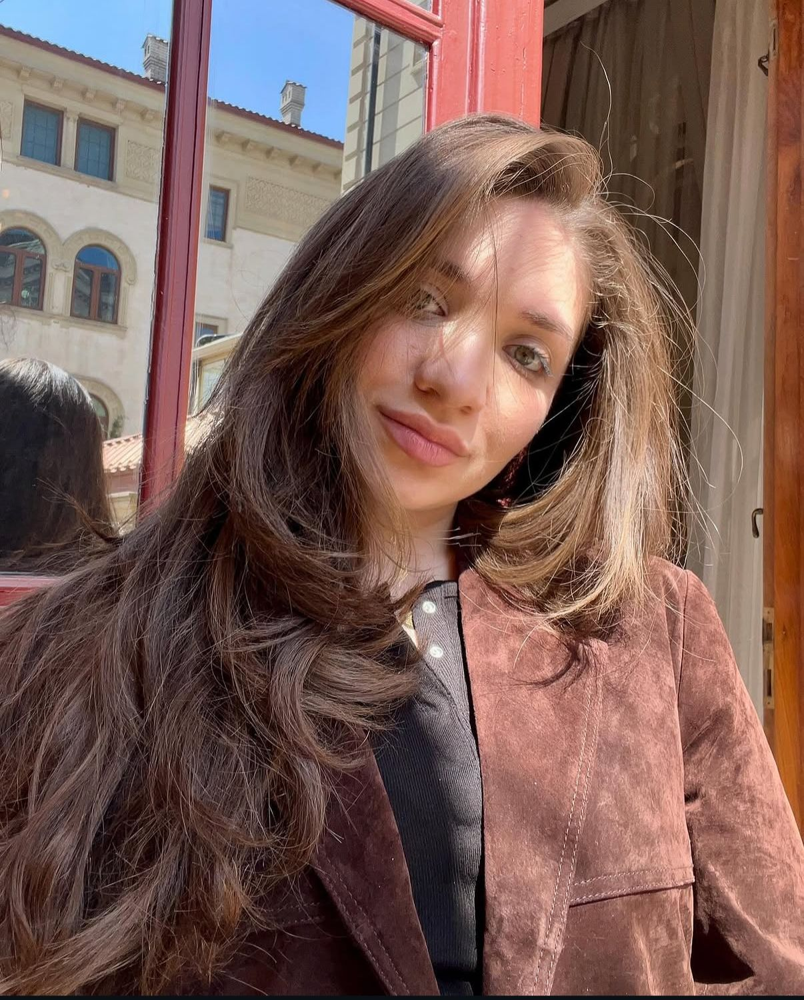

Media Communications Specialist focused on interviews, human stories, contemporary culture and editorial projects.

Interviews, cultural reporting, identity, society and modern voices.
Azerbaijani • English • Russian
Publications, collaborations, interviews and media projects.
Interview - fatima Abbasova Illustrations - Samir Salahov
Read ArticleInterview - Fatima Abbasova Photo - Gunel Ibragimova, Bolt Azerbaijan
Read ArticleLEGIS Forumu çərçivəsində “Paşa Holding”in baş icraçı direktoru Cəlal Qasımovla müsahibə. Müsahib - Fatimə Abbasova
Read ArticleMy name is Fatima Abbasova, and I work in media and communications. As a Managing Editor at Nargis Magazine, I coordinate the magazine’s editorial workflow and work closely with the team to ensure content is delivered smoothly, creatively, and to a high standard. My work includes preparing press releases, interviews, and feature articles, as well as communicating with journalists, media representatives, and partners. I also manage the magazine’s website and oversee digital publishing across different platforms. I enjoy working in fast-paced creative environments and am especially interested in public relations, media strategy, and storytelling.